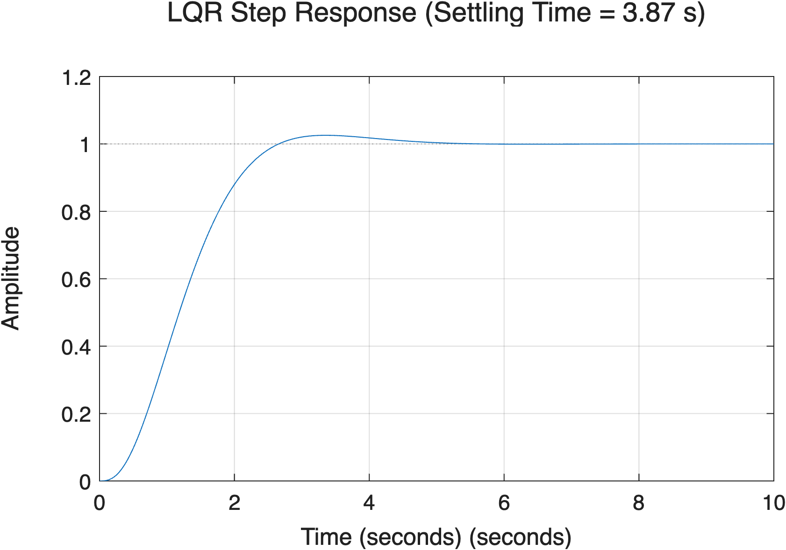

상태 공간(State-Space) 기반 제어 설계의 꽃이라고 할 수 있는 **LQR(최적 제어기)**에 대해 알아봅시다. 앞서 우리는 lqr_5sec_design.m 스크립트를 통해 LQR이 어떻게 원하는 성능(정착 시간 5초 이내)을 스스로 찾아내는지 확인했습니다.
LQR은 **"가장 적은 에너지(R)를 써서 가장 빨리 목표지점(Q)에 도달하는 최적의 경로"**를 수학적으로 계산해 주는 제어 기법입니다.
다음과 같은 비용 함수(Cost Function) 를 최소화하는 제어 이득 행렬 를 찾습니다.
Tip
핵심 요약: 제어기 설계자는 방 안의 온도를 맞출 때, "가스비를 아낄 것인가( 크게), 아니면 무조건 빨리 따뜻해질 것인가( 크게)" 사이의 타협점(Trade-off)만 결정해주면 됩니다. 나머지는 매트랩이 복잡한 미분방정식을 풀어서 알아서 계산해 줍니다!
처음 LQR을 배울 때 처럼 대각 행렬에 대충 숫자를 넣고 시작하는 경우가 많습니다. 하지만 이는 매우 위험할 수 있습니다!
우리가 제어하려는 시스템의 출력은 입니다. 매트랩의 ss(tf) 함수로 만든 상태 변수 가 우리가 직관적으로 생각하는 (위치, 속도, 가속도)와 반드시 일치하지는 않습니다. 따라서 무작정 첫 번째 상태 에 페널티를 주면, 정작 중요한 출력(위치)은 놔두고 엉뚱한 내부 변수만 억제되어 제어가 극도로 느려지거나 실패할 수 있습니다.
우리의 진짜 목표는 실제 출력 의 오차를 줄이는 것입니다. 따라서 상태 가 아닌 에 직접 페널티를 주어야 합니다. 수학적으로 이므로, 페널티는 로 변환됩니다.
따라서 매트랩 코드를 짤 때는 다음과 같이 를 설계하는 것이 정석입니다.
% 실제 측정/제어하려는 출력 y에 대해 가중치 q_y를 부여
Q = q_y * (C' * C);
% (수치적 안정을 위해 대각선에 아주 작은 0.001 * eye(3) 등을 더해주면 더 좋습니다)
Q = Q + 0.001 * eye(3);
Important
LQR 설계 시 무작정 단위 행렬을 쓰지 마시고, 관측 행렬 를 활용하여 실제 제어 목표인 출력값에 집중적으로 가중치를 구성하세요!
lqr_5sec_design.m 예제에서는 사용자가 일일이 수치를 바꿔가며 5초 정착 시간을 찾는 대신, **컴퓨터가 직접 행렬의 가중치를 점진적으로 키워가며 목표치를 달성하는 반복문(While Loop)**을 사용했습니다.
q_y = 1; % 출력에 대한 초기 가중치
ts = 100; % 초기 정착 시간 (더미 값)
while ts > 4.8 % 목표 정착 시간 5초 (안전 마진을 위해 4.8초)
% Q 행렬 업데이트
Q = q_y * (C' * C) + 0.001 * eye(3);
% LQR 최적 게인 K 계산
K = lqr(A, B, Q, R);
% ... (폐루프 시스템 구성 후 stepinfo로 정착 시간 ts 계산) ...
if ts <= 4.8
break; % 목표(5초 이내) 달성 시 루프 탈출!
end
q_y = q_y * 1.5; % 가중치를 1.5배씩 증가시키며 다시 계산
end
이처럼 LQR의 원리를 완벽히 이해하면, 사람의 감에만 의존하던 기존의 노가다(?) 튜닝 과정을 파이썬이나 매트랩 알고리즘으로 완벽하게 자동화할 수 있습니다.

위 그래프에서 보듯, 제어기는 아주 적절한 가중치를 스스로 찾아내 단 3.87초 만에 오버슈트 없이 목표치에 도달하는 훌륭한 성능을 보여줍니다.